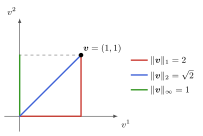
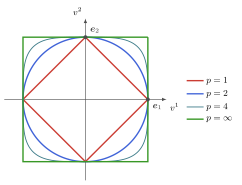
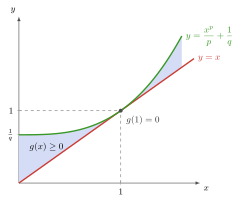
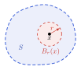
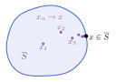
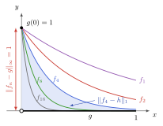
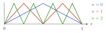

Hoofdstuk 4 - Normen en afstanden
Doel van dit hoofdstuk
$$ % Math operators % %
% VECTORS % specifically for vectors in F^n
% MATRICES
% SCALARS
% LINEAR MAPS
% FIELDS
% RELATIONS
$$
In {\mathbb{F}}^n is analyse vanzelfsprekend; in functieruimten niet.
Een norm geeft vectoren een lengte \Rightarrow een notie van afstand in een vectorruimte d({v}, {w}) = {\left\lVert{v}- {w}\right\rVert}
- Analyse in vectorruimten:
- convergentie
- continuïteit
- volledigheid
- Normen voor lineaire afbeeldingen:
- geïnduceerde norm
- spectraalstraal
- conditiegetal
Genormeerde vectorruimten
Norm
Definitie 4.2. Gegeven een vectorruimte V. Een norm is een afbeelding V \to {\mathbb{R}}: {v}\mapsto {\left\lVert{v}\right\rVert} die voldoet aan
absolute homogeniteit
\boxed{{\left\lVert{a}{v}\right\rVert} = {\left\lvert{a}\right\rvert} {\left\lVert{v}\right\rVert}} \Rightarrow {\left\lVert{o}\right\rVert} = 0
subadditiviteit / driehoeksongelijkheid
\boxed{{\left\lVert{v}+ {w}\right\rVert} \leq {\left\lVert{v}\right\rVert} + {\left\lVert{w}\right\rVert}} \Rightarrow {\left\lVert{o}\right\rVert} = 0 \leq {\left\lVert{v}\right\rVert} + {\left\lVert-{v}\right\rVert} = 2 {\left\lVert{v}\right\rVert}
positief definiet
\boxed{{\left\lVert{v}\right\rVert} = 0 \Leftrightarrow {v}= 0}
Voor de eerste eigenschap hebben we op het veld van scalairen {\mathbb{F}} een absolute waarde {\left\lvert{a}\right\rvert} nodig. Voor {\mathbb{R}} en {\mathbb{C}} komt dit overeen met de gekende definitie.
Nuttige eigenschap
Definitie 4.2. Gegeven een vectorruimte V. Een norm is een afbeelding V \to {\mathbb{R}}: {v}\mapsto {\left\lVert{v}\right\rVert} die voldoet aan
- absolute homogeniteit: {\left\lVert{a}{v}\right\rVert} = {\left\lvert{a}\right\rvert} {\left\lVert{v}\right\rVert} \Rightarrow {\left\lVert{o}\right\rVert} = 0
- subadditiviteit / driehoeksongelijkheid: {\left\lVert{v}+ {w}\right\rVert} \leq {\left\lVert{v}\right\rVert} + {\left\lVert{w}\right\rVert} \Rightarrow {\left\lVert{o}\right\rVert} = 0 \leq {\left\lVert{v}\right\rVert} + {\left\lVert-{v}\right\rVert} = 2 {\left\lVert{v}\right\rVert}
- positief definiet: {\left\lVert{v}\right\rVert} = 0 \Leftrightarrow {v}= 0
Opmerking 4.2. {\left\lVert{v}\right\rVert} \leq {\left\lVert{w}\right\rVert} + {\left\lVert{v}- {w}\right\rVert} (uit driehoeksongelijkheid)
\implies {\left\lVert{v}\right\rVert} - {\left\lVert{w}\right\rVert} \leq {\left\lVert{v}- {w}\right\rVert} \implies {\left\lvert{\left\lVert{v}\right\rVert} - {\left\lVert{w}\right\rVert}\right\rvert} \leq {\left\lVert{v}- {w}\right\rVert} (uit {v}\leftrightarrow {w})
Voorbeelden:
Voorbeeld 4.1. V = {\mathbb{F}}^n: {\left\lVert{v}\right\rVert} = \sum_{i=1}^n {\left\lvert v^i\right\rvert}
Voorbeeld 4.2. V = {\mathbb{R}}^2: {\left\lVert(x,y)\right\rVert} = \sqrt{x^2 + y^2}
Voorbeeld. V = C(I,{\mathbb{F}}) voor een interval I=[a,b] \subseteq {\mathbb{R}}: {\left\lVert f\right\rVert} = \int_I {\left\lvert f(x)\right\rvert}\,{\mathrm{d}}x (zie later)
Hölder p-norm
Definitie 4.3. Voor V = {\mathbb{F}}^n hebben we een familie van normen
{\left\lVert{v}\right\rVert}_p = \left[\sum_{i=1}^{n} {\left\lvert v^i\right\rvert}^p\right]^{1/p}
Speciale gevallen:
- p=1: Manhattan norm
- p=2: Euclidische norm \rightarrow zie volgend hoofdstuk
- limiet p\to \infty: {\left\lVert{v}\right\rVert}_\infty = \max \{{\left\lvert{v}^i\right\rvert}, i=1,\ldots,n\}
Hölder p-norm


De “lengte” van {v}= (1, 1) hangt af van de norm
Eenheidssferen {\left\lVert{v}\right\rVert}_p = 1 in {\mathbb{R}}^2 voor p \in \{1, 2, 4, \infty\}
Hölder p-norm
{\left\lVert\cdot\right\rVert}_p is absoluut homogeen en positief definiet per constructie.
Beschouw q = p/(p-1), zodat 1/p + 1/q = 1:
Lemma 4.1. Young’s ongelijkheid: \forall a,b \in {\mathbb{R}}_{\geq 0}: ab \leq \frac{a^p}{p} + \frac{b^q}{q}
Lemma 4.2. Hölder’s ongelijkheid: \sum_{i=1}^n {\left\lvert v^i\right\rvert}{\left\lvert w^i\right\rvert} \leq {\left\lVert v\right\rVert}_p {\left\lVert w\right\rVert}_q
Propositie 4.3. Minkowski’s ongelijkheid: {\left\lVert{v}+{w}\right\rVert}_p \leq {\left\lVert{v}\right\rVert}_p + {\left\lVert{w}\right\rVert}_p
Hölder p-norm
Lemma 4.1. Young’s ongelijkheid: \forall a,b \in {\mathbb{R}}_{\geq 0}: ab \leq \frac{a^p}{p} + \frac{b^q}{q}

Hölder p-norm
Lemma 4.1. Young’s ongelijkheid: \forall a,b \in {\mathbb{R}}_{\geq 0}: ab \leq \frac{a^p}{p} + \frac{b^q}{q}
Lemma 4.2. Hölder’s ongelijkheid: \sum_{i=1}^n {\left\lvert v^i\right\rvert}{\left\lvert w^i\right\rvert} \leq {\left\lVert{v}\right\rVert}_p {\left\lVert{w}\right\rVert}_q
Propositie 4.3. Minkowski’s ongelijkheid: {\left\lVert{v}+{w}\right\rVert}_p \leq {\left\lVert{v}\right\rVert}_p + {\left\lVert{w}\right\rVert}_p
Hölder p-norm
Uitbreiding naar oneindig-dimensionale ruimten:
Definitie 4.4. \boxed{\ell^p({\mathbb{N}}_0,{\mathbb{F}}) {\preccurlyeq}{\mathbb{F}}^{{\mathbb{N}}_0}}: de ruimte van alle rijen (v^1,v^2,v^3,\ldots) waarvoor \sum_{i=1}^{+\infty} {\left\lvert v^i\right\rvert}^p convergeert naar een eindige waarde
Opmerking 4.5.
- Minkowski’s ongelijkheid is nodig om aan te tonen dat \ell^p({\mathbb{N}}_0,{\mathbb{F}}) een vectorruimte is
- norm {\left\lVert{v}\right\rVert}_p = \left[\sum_{i=1}^{+\infty} {\left\lvert v^i\right\rvert}^p\right]^{1/p} is eindig
Opmerking 4.6.
- speciaal geval p=\infty: {\left\lVert{v}\right\rVert}_\infty = \sup\{{\left\lvert v^i\right\rvert}, i\in {\mathbb{N}}_0\} (supremum norm)
- \ell^\infty({\mathbb{N}}_0,{\mathbb{F}}): ruimte van begrensde rijen
Bewijs van eigenschappen norm = limiet n\to\infty van bewijs voor {\mathbb{F}}^n.
Hölder p-norm
Uitbreiding naar oneindig-dimensionale ruimten:
Voorbeeld 4.3. Voor V = C^0([a,b],{\mathbb{F}}): {\left\lVert f\right\rVert}_p = \left(\int_a^b {\left\lvert f(x)\right\rvert}^p\,{\mathrm{d}}x\right)^{1/p}
- Continuïteit f en compactheid van interval [a,b] noodzakelijk
- geen divergenties
- {\left\lVert f\right\rVert}_p=0 \implies f=0
- Driehoeksongelijkheid kan op analoge manier bewezen worden
- Meer over functies in H7
Metrische ruimten
Definitie 4.5. Gegeven een verzameling X, een metriek of afstandsfunctie is een functie d:X \times X \to {\mathbb{R}}_{\geq 0} met eigenschappen:
- \boxed{d(x,y) = 0 \iff x=y}
- \boxed{d(x,y) = d(y,x)}
- \boxed{d(x,y) + d(y,z) \geq d(x,z)}
en dan noemen we (X,d) een metrische ruimte
\rightarrow Niet noodzakelijk vectorruimte!
Propositie 4.4. Een genormeerde vectorruimte (V,{\left\lVert\cdot\right\rVert}) wordt een metrische ruimte met de keuze d({v},{w}) = {\left\lVert{v}-{w}\right\rVert}
Metrische ruimten
Metrische ruimten \Rightarrow veralgemenen van concepten uit analyse van functies {\mathbb{R}}\to {\mathbb{R}}:
Convergentie van een rij (x_n \in X)_{n \in {\mathbb{N}}_0} \boxed{\lim_{n\to\infty} x_n = x \iff \lim_{n\to\infty} d(x_n,x) = 0} of dus: \forall \epsilon > 0, \exists N_\epsilon \in {\mathbb{N}}_0 zodat n \geq N_\epsilon \implies d(x,x_n) \leq \epsilon
Continuïteit van \Phi: (X,d_X) \to (Y,d_Y) in x \in X: \Phi bewaart convergentie \boxed{\lim_{n\to\infty} d_X(x_n,x) = 0 \implies \lim_{n\to\infty} d_Y(\Phi(x_n),\Phi(x)) = 0}
- Zonder rijen: \forall \epsilon > 0, \exists \delta_\epsilon > 0: d_X(x',x) < \delta_\epsilon \implies d_Y(\Phi(x'),\Phi(x)) < \epsilon1
- \Phi continu op X: \lim_{n\to\infty} \Phi(x_n) = \Phi(\lim_{n\to\infty} x_n) (continu in elke x \in X)
Metrische ruimten
Definitie 4.6. Een afbeelding \Phi:X \to Y tussen metrische ruimten (X,d_X) en (Y,d_Y) is isometrisch als d_Y(\Phi(x),\Phi(x')) = d_X(x,x') voor alle x,x'\in X
Opmerking 4.9.
- Een isometrische afbeelding is automatisch (uniform) continu (\delta_\epsilon = \epsilon)
- Een isometrische afbeelding is automatisch injectief
- Een bijectieve isometrische afbeelding definieert een isomorfisme tussen (X, d_X) en (Y, d_Y)
Metrische ruimten
Topologische concepten in een metrische ruimte (X,d):
- Open bol: \boxed{B_r(x) = \{x' \in X \mid d(x,x') < r\}}
- Open (deel)verzameling S: \boxed{\forall x \in S, \exists r > 0 : B_r(x) \subseteq S}
- Gesloten deelverzameling S: \boxed{S^\text{c} = X \setminus S \text{ open}}
- convergente rij (x_n \in S) voldoet aan \lim_{n\to\infty} x_n \in S
- X en \emptyset zijn zowel open als gesloten
- Sluiting \overline{S}: \boxed{\text{kleinste gesloten verzameling die } S \text{ bevat}}
- = S en al zijn limietpunten
- Dichte deelverzameling S: \boxed{\overline{S} = X} (bvb: \overline{\mathbb{Q}} = {\mathbb{R}})
- Begrensde verzameling S: \boxed{\exists M \in {\mathbb{R}}_{\geq 0} : d(x,y) < M, \forall x,y \in S}
- X is separabel: \boxed{X \text{ heeft een aftelbare dichte deelverzameling}}


Continuïteit in genormeerde vectorruimte
Beschouw (V,{\left\lVert\cdot\right\rVert}) als metrische ruimte met metriek d({v},{w}) = {\left\lVert{v}-{w}\right\rVert}
Propositie 4.5. De norm {\left\lVert\cdot\right\rVert}:V\to {\mathbb{R}} is zelf een continue afbeelding
\Rightarrow voor ({v}_n) convergent, is ({\left\lVert{v}_n\right\rVert}) ook convergent
Propositie 4.6. Vector optelling +:V \times V \to V en scalaire vermenigvuldiging {\mathbb{F}}\times V \to V zijn continue afbeeldingen2
Convergentie in functieruimten
Voorbeeld 4.5. Beschouw opnieuw C^0([a,b],{\mathbb{F}}) met nu de p=\infty-norm, welke zich herleidt tot:3
{\left\lVert f\right\rVert}_p = \sup_{x\in [a,b]}{\left\lvert f(x)\right\rvert} = \max_{x\in[a,b]}{\left\lvert f(x)\right\rvert}
Convergentie: \lim_{n\to \infty} f_n = f als
- \max_{x\in [a,b]} {\left\lvert f_n(x)-f(x)\right\rvert} < \epsilon voor alle n > N_\epsilon
- {\left\lvert f_n(x)-f(x)\right\rvert} < \epsilon voor alle x \in [a,b] voor alle n > N_\epsilon
- \Rightarrow uniforme convergentie van een reeks
- \Rightarrow {\left\lVert f\right\rVert}_{\infty} voor continue functies wordt de uniform-norm genoemd
Voorbeeld 4.6. contrast met puntsgewijze convergentie:
{\left\lvert f_n(x)-f(x)\right\rvert} < \epsilon voor alle n > N_{\epsilon,x} voor alle x \in [a,b]
kan niet worden bekomen met behulp van norm
Convergentie in functieruimten (voorbeeld)
Beschouw de rij (f_n \in C^0([0,1],{\mathbb{R}}))_{n \in {\mathbb{N}}_0} met f_n(x) = \exp(-n x)
(f_n) convergeert puntsgewijs naar de (niet-continue!) functie
g(x) = \begin{cases} 1, x=0 \\ 0, x \in (0,1]\end{cases}
(f_n) convergeert volgens de p=1 norm naar de continue functie
h(x) = 0, \forall x \in [0,1]
(f_n) convergeert niet volgens de p= \infty norm

Equivalentie van normen
Definitie 4.7. Twee normen voor een vectorruimte V zijn equivalent als ze aanleiding geven tot dezelfde definitie van convergerende rijen, met dan dezelfde limietpunten
Propositie 4.7. Twee normen {\left\lVert\cdot\right\rVert}_a en {\left\lVert\cdot\right\rVert}_b zijn equivalent als en slechts als er constanten C \geq c > 0 bestaan zodat c {\left\lVert{v}\right\rVert}_a \leq {\left\lVert{v}\right\rVert}_b \leq C{\left\lVert{v}\right\rVert}_a voor alle {v}\in V
Propositie 4.8. Voor een eindig-dimensionale vectorruimte V zijn alle normen equivalent
Voorbeeld 4.8. Voorbeelden voor \boldsymbol{v} \in {\mathbb{F}}^n:
- \frac{{\left\lVert\boldsymbol{v}\right\rVert}_1}{\sqrt{n}} \leq {\left\lVert\boldsymbol{v}\right\rVert}_2 \leq {\left\lVert\boldsymbol{v}\right\rVert}_1
- \frac{{\left\lVert\boldsymbol{v}\right\rVert}_1}{n} \leq {\left\lVert\boldsymbol{v}\right\rVert}_\infty \leq {\left\lVert\boldsymbol{v}\right\rVert}_1
Oneindige dimensie: f_n(x) = e^{-nx} van de vorige slide
\Rightarrow {\left\lVert f_n\right\rVert}_1 \to 0 maar {\left\lVert f_n\right\rVert}_\infty = 1: {\left\lVert\cdot\right\rVert}_1 en {\left\lVert\cdot\right\rVert}_\infty niet equivalent op C^0([0,1],{\mathbb{R}})
Banachruimten
Cauchy rijen en compleetheid
Definitie 4.8. Een Cauchy-rij in een metrische ruimte (X,d) is een rij (x_n \in X)_{n\in{\mathbb{N}}_0} zodat \forall \epsilon >0: \exists N_\epsilon \in {\mathbb{N}} met dan n,m > N_\epsilon \implies d(x_n,x_m) < \epsilon
\rightarrow intuïtief: elementen in de staart van de rij komen arbitrair dicht bij elkaar
Propositie 4.10. Een convergente rij is altijd een Cauchy-rij
Definitie 4.9. Als elke Cauchy-rij convergeert wordt X (metrisch) compleet genoemd
Definitie 4.10. Een genormeerde vectorruimte (V,{\left\lVert\cdot\right\rVert}) die metrisch compleet is wordt een Banachruimte genoemd
Banachruimten
Voorbeelden:
Opmerking 4.11. Elke eindig-dimensionale vectorruimte, met eender welke norm
Opmerking 4.12. Elke eindig-dimensionale deelruimte W van een oneindig-dimensionale V, met de norm van V beperkt tot W
Voorbeeld 4.9. De rijen met eindige p-norm, \ell^p({\mathbb{N}}_0,{\mathbb{F}}), voor alle p \in [1,+\infty]
Voorbeeld 4.10. De continue functies C^0([a,b],{\mathbb{F}}) op een compact interval, met de uniforme norm {\left\lVert\cdot\right\rVert}_\infty
Banachruimten
Tegenvoorbeeld:
Voorbeeld 4.11.
- Ruimte {\mathbb{F}}[x] van polynomen met norm {\left\lVert p\right\rVert}= \max_{x \in [a,b]} {\left\lvert p(x)\right\rvert}
- p_n(x) = \sum_{k=0}^n \frac{1}{k!}x^k definieert een Cauchy-rij
- \lim_{n\to\infty} p_n bestaat niet als polynoom
- Herinterpreteer {\mathbb{F}}[x] als (eigenlijke) deelruimte van C^0([a,b],{\mathbb{F}})
- \lim_{n\to\infty} p_n = \exp bestaat als continue functie
- \Rightarrow een oneindige deelruimte van een Banachruimte is niet noodzakelijk gesloten
Banachruimten: complete verzameling
Oneindig-dimensionale deelruimten W {\preccurlyeq}V niet per se gesloten
\Rightarrow we kunnen hun sluiting \overline{W} bekijken
- Als \overline{W}=V, dan is W een dichte deelruimte
- Elke vector {v}\in V kan arbitrair dicht benaderd worden door een vector {w}\in W
- \forall \epsilon > 0, {v}\in V : \exists {w}\in W zodat {\left\lVert{v}-{w}\right\rVert}<\epsilon
Definitie 4.11. Een verzameling S waarvoor {\mathbb{F}}S dicht is, of dus \overline{{\mathbb{F}}S}=V, wordt een totale, fundamentele of complete verzameling genoemd
(Contrast met H1: complete verzameling als {\mathbb{F}}S = V)
Banachruimten: complete verzameling
Voorbeeld 4.12. Stelling van Stone-Weierstrass. Equivalente formuleringen:
- Elke continue functie kan arbitrair dicht (in uniform-norm) benaderd worden door een veelterm
- {\mathbb{F}}[x] is een dichte deelverzameling van C^0([a,b],{\mathbb{F}})
- \{x^n, n=0,1,2,\ldots\} is een complete verzameling voor C^0([a,b],{\mathbb{F}})
Banachruimten
Van rijen naar reeksen in genormeerde vectorruimten (V,{\left\lVert\cdot\right\rVert})
Definitie 4.12. Convergentie van reeksen: als rij van partieelsommen convergeert
\boxed{\sum_{n=1}^{+\infty} {v}_n = {v}\iff \lim_{n\to \infty} {\left\lVert\sum_{k=1}^{n} {v}_k - {v}\right\rVert} = 0}
Definitie 4.13. Een reeks \sum_{n=1}^{+\infty} {v}_n is absoluut convergent als de reeks \sum_{n=1}^{+\infty} {\left\lVert{v}_n\right\rVert} convergeert
(geen nodige voorwaarde voor convergentie)
Propositie 4.11. Een genormeerde vectorruimte is metrisch compleet (Banachruimte) als en slechts als absolute convergentie een voldoende voorwaarde is voor convergentie van een reeks.
Banachruimten en basis
Convergentie van rijen en reeksen laat een nieuw concept van basis toe in Banachruimten (V,{\left\lVert\cdot\right\rVert})
Definitie 4.14. Een Schauder basis is een rij ({e}_n \in V)_{n \in {\mathbb{N}}_0} zodat voor elke vector {v}\in V een rij van coefficiënten (a^n \in {\mathbb{F}})_{n \in {\mathbb{N}}_0} bestaat, zodat \sum_{n=1}^{+\infty} a^n {e}_n = {v}
Voorbeeld 4.13. De rij (x^n)_{n \in {\mathbb{N}}} is geen (!!) Schauder basis voor (C^0([a,b],{\mathbb{F}}), {\left\lVert\cdot\right\rVert}_{\infty}):
een reeks \sum_{n=0}^{+\infty} a_n x^n die convergeert met betrekking tot {\left\lVert\cdot\right\rVert}_{\infty} (uniforme convergentie) geeft sowieso aanleiding tot een analytische functie
een niet-analytische continue functie zoals {\left\lvert x\right\rvert} heeft geen Taylorreeks die in het volledige interval convergent is
\Rightarrow allerlei technische subtiliteiten die verdwijnen in het geval van Hilbertruimten (zie volgend hoofdstuk)

Wél een Schauder basis: Faber–Schauder-hoedjes
Normen voor lineaire afbeeldingen
Normen voor matrices
Gegeven {\mathsf{A}} \in {\mathbb{F}}^{m \times n}:
- ‘vectoriseer’ {\mathsf{A}} (vergeet de matrixstructuur) via {\mathbb{F}}^{m \times n} \cong {\mathbb{F}}^{m n} (vectorruimte-isomorphisme) en gebruik een vectornorm
Definitie 4.15. Frobenius norm (ook wel Hilbert-Schmidt norm):
\boxed{{\left\lVert{\mathsf{A}}\right\rVert}_\text{F} = \left(\sum_{i=1}^{m}\sum_{j=1}^{n} {\left\lvert A^i_{\ j}\right\rvert}^2\right)^{1/2} = \sqrt{\mathop{\mathrm{tr}}({\mathsf{A}}^{\mathsf{H}}{\mathsf{A}})}}
- Normen met extra nuttige eigenschappen voor lineaire afbeeldingen?
Continuïteit van lineaire afbeeldingen
Beschouw genormeerde vectorruimten (V,{\left\lVert\cdot\right\rVert}_V) en (W,{\left\lVert\cdot\right\rVert}_W).
Definitie 4.16. Een lineaire afbeelding {\hat{A}}\in \mathop{\mathrm{Hom}}(V,W) wordt begrensd genoemd als er een constante C \in {\mathbb{R}}_{\geq 0} bestaat zodat {\left\lVert{\hat{A}}{v}\right\rVert}_W\leq C {\left\lVert{v}\right\rVert}_V,\quad\forall {v}\in V
Propositie 4.12. Voor een lineaire afbeelding {\hat{A}}\in \mathop{\mathrm{Hom}}(V,W) zijn volgende eigenschappen equivalent
- {\hat{A}} is begrensd
- {\hat{A}} is continu in de oorsprong
- {\hat{A}} is overal continu (en zelfs uniform continu)
Begrensde lineaire afbeeldingen
Definitie 4.17. We definiëren \mathcal{B}(V,W) {\preccurlyeq}\mathop{\mathrm{Hom}}(V,W) als de ruimte van begrensde lineaire afbeeldingen tussen genormeerde vectorruimten (V,{\left\lVert\cdot\right\rVert}_V) en (W,{\left\lVert\cdot\right\rVert}_W).
- \mathcal{B}(V,W) vormt inderdaad een vectorruimte (een deelruimte van \mathop{\mathrm{Hom}}(V,W)): tracht dit zelf aan te tonen!
Propositie 4.13. Als het domein V een eindig-dimensionale ruimte is, geldt \mathcal{B}(V,W)=\mathop{\mathrm{Hom}}(V,W)
Definitie 4.18. Een norm {\left\lVert{\hat{A}}\right\rVert} voor lineaire afbeeldingen {\hat{A}}\in \mathcal{B}(V,W) heet ondergeschikt (subordinate) aan de vectornormen in V en W als {\left\lVert{\hat{A}}{v}\right\rVert}_W \leq {\left\lVert{\hat{A}}\right\rVert} {\left\lVert{v}\right\rVert}_V,\quad\forall {v}\in V
Geïnduceerde norm
Definitie 4.19. Beschouw genormeerde vectorruimten (V,{\left\lVert\cdot\right\rVert}_V) en (W,{\left\lVert\cdot\right\rVert}_W). We kunnen een norm voor afbeeldingen {\hat{A}}\in \mathcal{B}(V,W) definiëren via
\begin{align} {\left\lVert{\hat{A}}\right\rVert}_{V \to W} &= \inf\{ C | {\left\lVert{\hat{A}} {v}\right\rVert}_W \leq C {\left\lVert{v}\right\rVert}_V, \forall {v}\in V\}\nonumber\\ &= \sup\left\{\frac{{\left\lVert{\hat{A}}{v}\right\rVert}_W}{{\left\lVert{v}\right\rVert}_V}\ \text{with}\ {v}\neq {o}_V\right\}\nonumber\\ &= \sup\{ {\left\lVert{\hat{A}}{v}\right\rVert}_W \text{with}\ {\left\lVert{v}\right\rVert}_V = 1\} \end{align}
Deze norm staat gekend als de geïnduceerde norm of soms ook operator norm (ook al geldt hij voor algemene lineaire afbeeldingen). Soms wordt ook met de “subordinate norm” specifiek naar deze definitie verwezen.
Geïnduceerde norm
Propositie 4.14. Voor (V, {\left\lVert\cdot\right\rVert}_V) een genormeerde ruimte en (W,{\left\lVert\cdot\right\rVert}_W) een Banachruimte geldt dat de ruimte \mathcal{B}(V,W) van begrensde lineaire afbeeldingen in combinatie met de geïnduceerde norm {\left\lVert\cdot\right\rVert}_{V\to W} zelf een Banachruimte is
Normen voor lineaire operatoren
Beschouw nu specifiek {\hat{A}}\in \mathop{\mathrm{End}}(V) voor een Banachruimte (V,{\left\lVert\cdot\right\rVert}_V). De begrensde lineaire operatoren worden genoteerd als \mathcal{B}(V) = \mathcal{B}(V,V) {\preccurlyeq}\mathop{\mathrm{End}}(V).
Definitie 4.20. Een norm {\left\lVert\cdot\right\rVert} voor lineaire operatoren wordt submultiplicatief genoemd als {\left\lVert{\hat{A}}\cdot{\hat{B}}\right\rVert} \leq {\left\lVert{\hat{A}}\right\rVert} {\left\lVert{\hat{B}}\right\rVert}, \quad \forall {\hat{A}},{\hat{B}} \in \mathcal{B}(V)
Propositie 4.15. De geinduceerde norm {\left\lVert{\hat{A}}\right\rVert}_{V\to V} is submultiplicatief
Voorbeeld 4.14. Voor elke submultiplicatieve of ondergeschikte norm geldt {\left\lVert{\hat{1}}\right\rVert} \geq 1. Voor de geinduceerde norm is {\left\lVert{\hat{1}}\right\rVert}=1.
Normen voor matrices
- p-norm vormt een familie van normen voor vectoren in {\mathbb{F}}^n voor arbitraire n
Voorbeeld 4.15. Voor {\mathsf{A}}\in{\mathbb{F}}^{m \times n}: geïnduceerde norm {\left\lVert{\hat{A}}\right\rVert}_{p\to q} voor p-norm op {\mathbb{F}}^m en q-norm op {\mathbb{F}}^n (typisch willen we p=q)
{\left\lVert{\mathsf{A}}\right\rVert}_{\text{col}} = {\left\lVert{\mathsf{A}}\right\rVert}_{1 \to 1} = \max_{j=1,\ldots,n} \sum_{i=1}^{m} {\left\lvert A^i_{\ j}\right\rvert}
{\left\lVert{\mathsf{A}}\right\rVert}_{\text{row}} = {\left\lVert{\mathsf{A}}\right\rVert}_{\infty \to \infty} = \max_{i=1,\ldots,m} \sum_{j=1}^{n} {\left\lvert A^i_{\ j}\right\rvert}
(oefeningen, zelf proberen)
Voorbeeld 4.16. {\left\lVert{\mathsf{A}}\right\rVert}_{2 \to 2} is moeilijker te berekenen, en is gegeven door de grootste “singuliere waarde” (zie H6)
Consistente matrixnormen
Definitie 4.21. Gegeven een familie van normen \{{\left\lVert\cdot\right\rVert}^{(m \times n)}: {\mathbb{F}}^{m\times n} \to {\mathbb{R}}_{\geq 0}; \forall m, n \in {\mathbb{N}}\} voor matrices van alle groottes:
- deze worden consistent genoemd als {\left\lVert{\mathsf{A}}{\mathsf{B}}\right\rVert}^{(m \times n)} \leq {\left\lVert{\mathsf{A}}\right\rVert}^{(m \times k)} {\left\lVert{\mathsf{B}}\right\rVert}^{(k \times n)} voor alle {\mathsf{A}}\in{\mathbb{F}}^{m\times k} en {\mathsf{B}}\in{\mathbb{F}}^{k\times n}
Propositie 4.16. De normen {\left\lVert{\mathsf{A}}\right\rVert}_{p\to p} zijn consistent
Propositie 4.17. De norm {\left\lVert{\mathsf{A}}\right\rVert}_{\text{F}}={\left\lVert\text{vectorize}({\mathsf{A}})\right\rVert}_2 is consistent
Opmerking 4.22. De norm {\left\lVert\text{vectorize}({\mathsf{A}})\right\rVert}_\infty is niet consistent
Matrixnormen: terminologie
Opmerking 4.21. Het concept “matrixnorm” wordt vaak gedefinieerd als een norm die voldoet aan
- de drie voorwaarden van een vectornorm
- de consistentievoorwaarde
Opmerking 4.19. De consistentievoorwaarde is een veralgemening van submultiplicativiteit van operatornormen.
- Er is geen gestandaardiseerde terminologie en “subordinate”, “submultiplicative” en “consistent” of ook “compatible” wordt door elkaar gebruikt
Spectraalstraal
Definitie 4.22. De spectraalstraal van een operator {\hat{A}}\in\mathop{\mathrm{End}}(V) is gedefinieerd als \rho_{{\hat{A}}} = \sup\{{\left\lvert\lambda\right\rvert};\lambda \in \sigma_{{\hat{A}}}\}
Propositie 4.18. Voor een submultiplicatieve norm en V eindig-dimensionaal geldt {\left\lVert{\hat{A}}\right\rVert} \geq \rho_{{\hat{A}}}
Opmerking 4.24.
- ook \rho_{{\hat{A}}}^n \leq {\left\lVert{\hat{A}}^n\right\rVert}
- als {\hat{A}} inverteerbaar: {\left\lVert{\hat{A}}\right\rVert}^{-1}\leq \rho_{{\hat{A}}}^{-1} \leq {\left\lVert{\hat{A}}^{-1}\right\rVert}
Propositie 4.19. Gelfand formule: \rho_{\hat{A}} =\lim_{n\to\infty}{\left\lVert{\hat{A}}^n\right\rVert}^{\frac{1}{n}}
Toepassingen
Functies van matrices en operatoren
Functie met convergente Taylorreeks rond z=0: f(z) = \sum_{n=0}^{+\infty} f_n z^n, \quad \forall {\left\lvert z\right\rvert}<R
{\hat{A}}\in\mathcal{B}(V) met submultiplicatieve operatornorm: {\left\lVert\sum_{n=0}^{+\infty} f_n {\hat{A}}^n\right\rVert} \leq \sum_{n=0}^{+\infty} {\left\lvert f_n\right\rvert} {\left\lVert{\hat{A}}^n\right\rVert} \leq \sum_{n=0}^{+\infty} {\left\lvert f_n\right\rvert} {\left\lVert{\hat{A}}\right\rVert}^n
\Rightarrow \sum_{n=0}^{+\infty} f_n {\hat{A}}^n convergeert als {\left\lVert{\hat{A}}\right\rVert}<R en V een Banachruimte is
Nilpotent {\hat{N}} ({\hat{N}}^s = 0): voor elke R > 0 bestaat een norm met {\left\lVert{\hat{N}}\right\rVert}_{R,s} < R
\Rightarrow het normcriterium hangt af van de keuze van norm
Sensitiviteit van lineaire systemen
Lineair systeem {\hat{A}}{x}= {y} met {x},{y}\in V en {\hat{A}} \in \mathop{\mathrm{End}}(V) met V een genormeerde vectorruimte met norm {\left\lVert\cdot\right\rVert}
- Stel kleine variatie {y}\to {y}+ \Delta{y}\Rightarrow {x}\to {x}+ \Delta {x}
Definitie 4.23. \frac{{\left\lVert\Delta {x}\right\rVert}}{{\left\lVert{x}\right\rVert}} \leq \kappa({\hat{A}}) \frac{{\left\lVert\Delta{y}\right\rVert}}{{\left\lVert{y}\right\rVert}}
met het conditiegetal \kappa({\hat{A}}) gegeven door
\kappa({\hat{A}}) = \begin{cases} {\left\lVert{\hat{A}}\right\rVert}{\left\lVert{\hat{A}}^{-1}\right\rVert},&\text{als ${\hat{A}}$ inverteerbaar}\\ +\infty,&\text{anders} \end{cases}
met hierin {\left\lVert{\hat{A}}\right\rVert} de geïnduceerde norm geassocieerd aan de vectornorm
Sensitiviteit van lineaire systemen
Ook variatie {\hat{A}}\to {\hat{A}}+\Delta{\hat{A}}, met {\left\lVert{\hat{A}}^{-1}\Delta{\hat{A}}\right\rVert} < 1: {\left\lVert({\hat{A}} + \Delta{\hat{A}})^{-1}\right\rVert} \leq \frac{{\left\lVert{\hat{A}}^{-1}\right\rVert}}{1 - {\left\lVert{\hat{A}}^{-1} \Delta{\hat{A}}\right\rVert}}
\Rightarrow samen met variatie \Delta{y}:
\boxed{\frac{{\left\lVert\Delta {x}\right\rVert}}{{\left\lVert{x}\right\rVert}} \leq \frac{\kappa({\hat{A}})}{1 - {\left\lVert{\hat{A}}^{-1} \Delta{\hat{A}}\right\rVert}} \left( \frac{{\left\lVert\Delta {y}\right\rVert}}{{\left\lVert{y}\right\rVert}} + \frac{{\left\lVert\Delta{\hat{A}}\right\rVert}}{{\left\lVert{\hat{A}}\right\rVert}}\right)}
A posteriori fout van benaderde oplossing \tilde{{x}} (exact: {x}), via residu {r} = {y}- {\hat{A}}\tilde{{x}}: \boxed{\frac{{\left\lVert{x}- \tilde{{x}}\right\rVert}}{{\left\lVert{x}\right\rVert}} \leq \kappa({\hat{A}}) \frac{{\left\lVert{r}\right\rVert}}{{\left\lVert{y}\right\rVert}}}
Voetnoten
\delta_\epsilon hetzelfde voor alle x \in X: “uniform continu”↩︎
Hiervoor hebben we het volgende nodig: de productverzameling X \times Y van twee metrische ruimten (X, d_X) en (Y, d_Y) is metrische ruimte, bijvoorbeeld met metriek d_{X,Y}((x,y), (x',y')) = d_X(x,x') + d_Y(y,y')↩︎
Extremumstelling van Weierstrass: \sup wordt \max voor continue f begrensd interval [a,b]↩︎